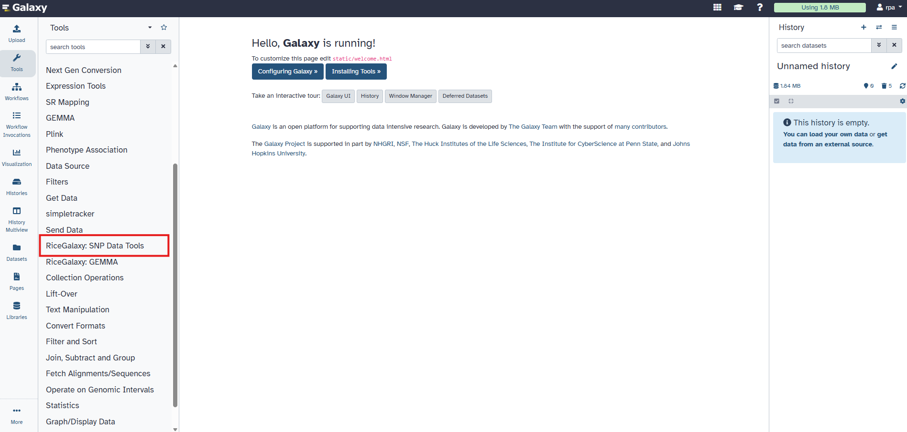
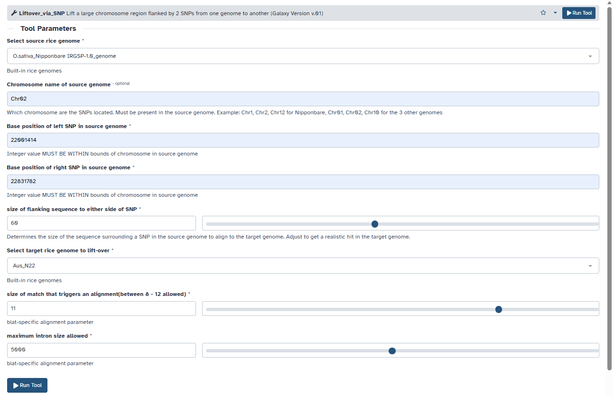
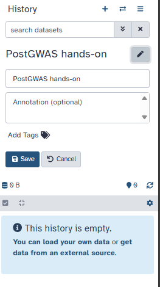
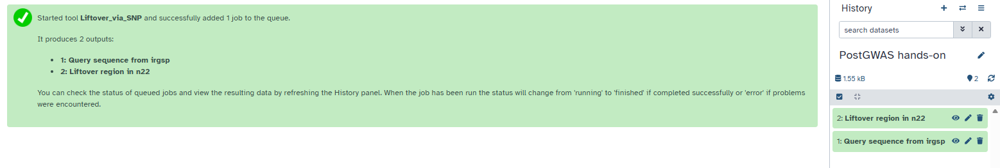
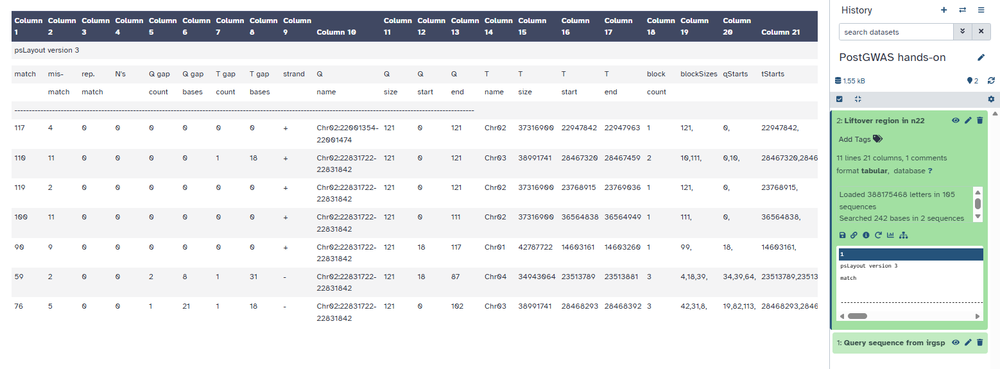
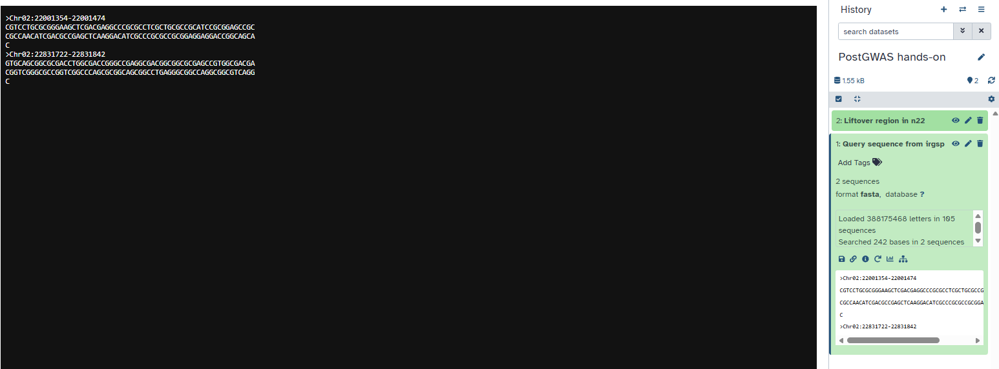

Objective
Learn how to identify candidate genes from a genomic region of interest using CropGalaxy and its integrated tools.
Instructions
-
Open CropGalaxy.
You will see three main panels:
- Left panel: Available tools
- Middle panel: Analysis workspace
- Right panel: Analysis history

CropGalaxy landing page showing the three main panels -
Select the RiceGalaxy: SNP Data Tools suite.
Tip: Use the search bar to locate tools faster.
SNP Data Tools suite in the tool panel -
Select the Liftover_via_SNP tool.
This tool maps genomic regions from a source genome to a target genome using BLAT alignment.

Liftover_via_SNP tool interface -
Configure Lift-Over parameters:
- Select Nipponbare as source genome
-
Enter coordinates:
Chr02,
22001414,
22831782
Note: Incorrect chromosome names will cause errors. - Select N22 as target genome
- Leave other settings as default

Liftover tool parameters -
Rename history to:
PostGWAS hands-on

Renaming analysis history -
Click Run Tool

Liftover tool results in history panel -
Viewing output datasets: Click the View Data icon

Lifted-over region in N22 genome

Query sequence from IRGSP reference genome
Notes
Follow each step carefully and document results for future analysis.